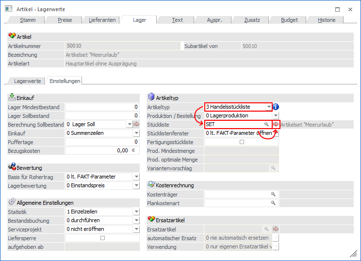

Die Handelsstückliste
Eine Handelsstückliste (nachfolgende auch "Fertigprodukt" genannt) weist folgende Merkmale auf:
ü Eine Handelsstückliste kann während der Belegbearbeitung dynamisch erweitert, reduziert oder geändert werden.
ü Bei einer Handelsstückliste kann im Artikelstamm keine Lagerortstruktur hinterlegt werden, d.h. die Nutzung von Lagerorten des LAGERMANAGEMENTs ist nicht möglich!
ü Sowohl für das Fertigprodukt, als auch für die Komponenten, können Chargen und Identnummern verwaltet werden.
ü Der Verkaufspreis der gesamten Stückliste (sogenannte "Fertigprodukt") muss nicht der Summe der Komponenten entsprechen.
ü Der Einstandspreis der gesamten Stückliste (sogenannte "Fertigprodukt") entspricht der Summe der Einstandspreise der Komponenten.
ü Die Fertigprodukte werden in der Statistik geführt.
ü Die Komponenten werden nicht in der Verkaufsstatistik
ü Die Fertigprodukte werden am Lager geführt.
ü Die Komponenten werden am Lager geführt.
Anlage einer Handelsstückliste
Die Anlage einer Handelsstückliste erfolgt im Programmpunkt…
1 WinLine FAKT
1 Stammdaten
1 Artikelstamm
1 Artikel

Zunächst wird der Artikel definiert, der eine Handelsstückliste werden soll. Die Anlage unterscheidet sich dabei zunächst nicht von der eines Standard-Artikels. Im Register "Lager" (Unterregister "Einstellungen") werden dann folgende Einstellungen getroffen:
Ø Artikeltyp
An dieser Stelle wird der Artikeltyp "3 - Handelsstückliste" eingetragen.
Ø Stückliste
Hier kann die Handelsstückliste hinterlegt werden. Durch
Anwählen des  Buttons kann dabei
sofort die Stückliste definiert werden (nähere Informationen entnehmen Sie bitte
dem Kapitel Stücklistenstamm).
Buttons kann dabei
sofort die Stückliste definiert werden (nähere Informationen entnehmen Sie bitte
dem Kapitel Stücklistenstamm).
Ø Stücklistenfenster
An dieser Stelle kann definiert werden, ob das Handelsstücklistenfenster beim Erfassen eines Handelsstücklistenartikels geöffnet werden soll oder nicht. Hierfür stehen folgende Einstellungen zur Auswahl:
ü 0 - lt. FAKT-Parametern öffnen
ü 1 - immer öffnen
ü 2 - nie öffnen
Behandlung der Stückliste im Lager
Die Handelsstückliste bzw. deren Komponenten werden wie folgt behandelt:
ü Bei Druck des Lieferscheins erfolgt für das Handelsprodukt eine Abbuchung mit Buchungsschlüssel "V" die zum Einstandspreis der Komponenten bewertet ist.
Hinweis
Wurde die Stückliste nicht vom Lager genommen, so erfolgt bei Druck des Lieferscheins zusätzlich eine Zubuchung mit Buchungsschlüssel "L" die zum Einstandspreis der Komponenten bewertet ist.
ü Bei Druck der Rechnung erfolgt für das Handelsprodukt eine Buchung mit Buchungsschlüssel "U", welche zum Verkaufspreis des Belegmittelteils bewertet ist.
ü Die Komponenten werden vom Lager
(mit dem Buchungsschlüssel "P") zum Einstandspreis abgebucht, wenn die
Stückliste nicht vom Lager genommen wird.
Die Abbuchung erfolgt zum Zeitpunkt
des Lieferscheindrucks oder falls kein Lieferschein gedruckt wird, zum Zeitpunkt
des Rechnungsdrucks.
Andruckmöglichkeiten der Handelsstückliste im Beleg
Grundsätzlich wird der Handelsartikel ausgedruckt. Die Komponenten werden in den Standard Formularen unterdrückt.
Auf Wunsch können die Komponenteninformationen ganz oder teilweise angedruckt werden. Um diesen Andruck zu aktivieren, müssen die Variablen im Formular-Editor mit dem Flag "H" versehen werden, wobei beliebige Kombinationen möglich sind.
Beispiel
Vom Handelsartikel werden Nummer, Bezeichnung, Menge, Preis, Gesamtwert angedruckt.
Von den Komponenten werden Nummer, Bezeichnung, Menge angedruckt.